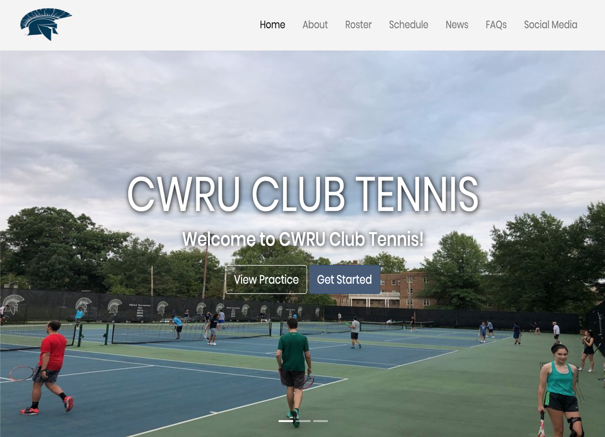

Hi there! My name's Eddie and I'm currently a Junior at Case Western Reserve University (class of 2022) studying computer science
and statistics, with a minor in business management.
I first became fascinated with coding after my best friend built a spambot that flooded
my inbox with emails. He wouldn't show me how he did it, so I decided to learn how to make one myself.
Now, after almost three years of taking programming
classes, pursuing my own side projects, and researching tools and frameworks, I think I've finally developed enough
skills to get him back!
All in all, I've grown to love the process of solving difficult problems, fixing challenging bugs, and exploring new concepts.
I love being able to instantly see if my program works or not, and am always excited to see a project idea slowly come to fruition. Within the domain of software engineering, I'm primarily interested
in cybersecurity, artificial intelligence, and cloud computing.
In my free time, you can catch me on the tennis courts, playing chess with friends, lifting at the gym,
or strumming my guitar.
Thanks again for stopping by! Be sure to check out some of my projects below!
Projects

CWRU Club Tennis Website
When I was first asked to build a website for the club tennis team, I wasn't sure where to begin. After all, the only
other "website" I'd ever made just included a bunch of hyperlinks to my social media profiles. I hadn't even deployed the site!
I had learned a bit of WXML and WXSS from a previous internship, but wasn't too certain how much this experience would help.
I began by looking up online YouTube tutorials on "How to make a website from scratch."
In these videos, I got to learn more about different HTML tags and CSS, as well as a little bit more of Javascript. From there, I started looking into Bootstrap and React and
was able to slowly begin building up the website on my own IDE.
And after a few days of reading online documentation and playing around with my code, I ended up with a pretty decent website - one which will
serve as the official website for the Case Western Reserve University club tennis team starting Fall 2020!
See the code: here
Automating 5 Bots in 5 Days
5-Bots-in-5 was a project that I began one week before my summer 2020 internship started. This summer,
there were just so many unfortunate events that occurred. As a response, I decided to spend 6-8 hours
a day programming different kinds of bots that would spread positivity and good vibes. Ultimately, I built
1) A Tinder bot that "swiped right" on everyone and would send wholesome messages to all matches.
2) A LinkedIn bot that posted positive status updates and sent recruiters kind, personalized messages.
3) An Instagram bot that would go to different profiles, "like" all of the user's posts, and comment kind, unique things under each post.
4) A YouTube bot that would log into your account and "like" every video on someone's channel.
5) An Amazon bot that would buy your groceries, selecting each item's best-sellers and choosing the cheapest shipping option that didn't require Amazon Prime.
Overall, the experience was definitely super cool. I got to learn more about how to use PyTesseract to bypass the initial 6-digit SMS verification code that is sent to your phone,
how to use Selenium and Chromedriver, and how the bot can "interact" with webpages through HTML attributes. An added bonus was seeing all of the amazing responses!
Check out the YouTube Demos here
Read more about the process here
Experience
Resident Assistant
Case Western Reserve Residential Life
August 2020 - Present
(Future Role)
I will be a Resident Assistant in one of the 4 Freshmen residential colleges on campus.
EECS 340 TA
Case Western Reserve Computer Science Department
August 2020 - Present
(Future Role)
I was nominated to be a teaching assistant for an Algorithms course with 100+ students.
Every week, I will conduct office hours to help students understand the fundamental concepts in algorithms.
Software Engineering Intern
Erie Insurance
May 2020 - August 2020
I am currently interning at Erie Insurance, working on the Enterprise Content Management team.
EECS 233 TA
Case Western Reserve Computer Science Department
January 2020 - May 2020
I was a Teaching Assistant for a Data Structures class with over 150 students. Every week,
I held office hours to help students with assignments, answer their questions, and review/explain
course material. I also worked closely with the professor to generate problem sets
and graded homeworks, quizzes, and exams
Software Developer Intern
ThinkTown Education
June 2019 - August 2019
I worked in the IT department to improve the functionality of
a WeChat mini-program used to store problem sets for ~3500 students (and increasing).
I used the WeChat API, WXML and WXSS to implement a take-home exercise section for students
(sorry students if you're reading this), and also added the feature to "lock" problem sets
if previous sets were not yet solved/attempted to improve organization.
Education
Case Western Reserve University
Bachelor of Science in Computer Science
2018 - Present
I'm currently a Junior at Case Western Reserve University. On campus, I am
a Resident Assistant, hold an exec position on the club tennis team, a member of the chess
club, and a member of Habitat for Humanity.
Relevant Coursework:
EECS 131: Introduction to Programming in Java
EECS 132: Introduction to Programming in Matlab
EECS 233: Data Structures (Teaching Assistant)
EECS 281: Logic Design and Computer Organization
EECS 302: Discrete Mathematics
EECS 338: Operating Systems
EECS 340: Algorithms (Teaching Assistant)
EECS 341: Databases
EECS 391: Artificial Intelligence
EECS 393: Software Engineering
STAT 332: Statistics for Signal Processing
High School
The Lawrenceville School
2015-2018
I graduated from The Lawrenceville School.